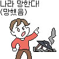

조선을 사람들이 ㅈㄴ 무시하는데

댓글
추하니까 망했다가 아니라 망할 때는 원래 추하다 구나
이자식 방금 개추라고
세금을 90퍼센트 때가면 혁명 안일어남?
좆밥이라 어디서 노예는 못구해오니
자국민 노예로 부린게 조선인데 미화는 쫌....
당시 조선이 좆밥 체급은 아니었음
좀 멍청한 주장인거 같구만
원종이냐?
자국민 노예라는건 도대체 언제 어디서 발생한 개념인지 아리송하다...
조선은 16세기까지만해도 세계 10위권강국임


근데 진짜 궁금한게 안 추하게 끝난 나라가 있었을까?
아틀란티스? 무대륙,레무리아 . 한방에 사요나라
개추
단군 스타팅 포인트 선정 개 ㅆ하 ㅌㅊ
? : 시발놈들아 만주에 스타팅 했는데 왜 자꾸 아래로 기어들어가서 짱박혔냐고
이거 국뽕 아닌거지?
개붕이들 다 한국사 동아시아사 전공자들 같어
뭔 학회 열린 줄
조선 욕먹는데 가장 크게 기여한 1등공신은 재야사학자들 일부임ㅋㅋ
2000년대 전후로 국뽕 존나 크게 먹은 일부가 블로그나 개인홈피 같은곳에
찻잔속 태풍을 몇개 만들어놨는데 그게 지금까지 알음알음 영향을 끼쳐서 이지랄까지옴
참고로 조선 욕하는 논리 그대로 유럽이나 동아시아 여러 국가들에 대입하면
병신 아닌 나라가 없음
조선 후기에 세도정치가 나라가 휘청거리는데 그것도 사실 정조가 만들어놓은 '유능한 왕+뒷받침 하며 신하들을 견제하는 인척세력' 이라는 체계에서 시작된 것임.
문제는 정조, 순조가 연이어 일찍 요절하고 아무것도 모르는 철종이 즉위하면서 인척세력을 누구도 컨트롤 할수 없게된 거...
아무리 대륙 끝 동떨어진 땅이라지만 개방/개화할 여지는 많이 있었을텐데.. 국가이념부터가 고리타분한 성리학...